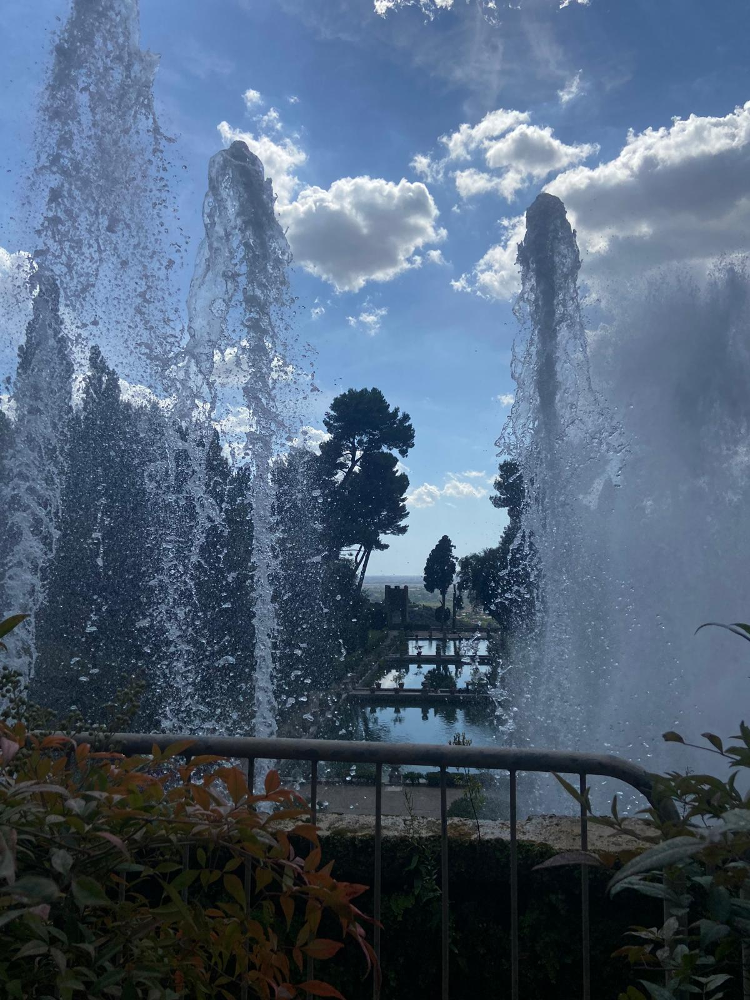

La Fontana di Nettuno è una delle più maestose e spettacolari della Villa d’Este a Tivoli. Situata nella parte inferiore del giardino, domina la scenografica prospettiva centrale che conduce alla Fontana dell’Ovato, creando un perfetto equilibrio visivo tra architettura e natura.
L’aspetto attuale della fontana risale agli interventi del cardinale Alessandro d’Este, che nel XVII secolo decise di rinnovare l’impianto originario, ormai danneggiato dal tempo. L’opera fu affidata all’architetto Giovanni Battista Ferrario, che progettò una composizione grandiosa, con una grande vasca e potenti zampilli d’acqua che si innalzano fino a diversi metri d’altezza.
Al centro della scena si erge la statua di Nettuno, il dio del mare, circondato da tritoni e figure marine scolpite nella pietra. L’acqua sgorga da più livelli, formando una cascata spettacolare che scende verso le vasche inferiori, creando un effetto dinamico e potente, simbolo del dominio del dio sugli elementi naturali.
Oltre al suo valore artistico, la Fontana di Nettuno è anche un capolavoro di ingegneria idraulica: sfrutta un complesso sistema di condotte e pressioni naturali per alimentare i getti d’acqua, senza bisogno di pompe meccaniche. Ancora oggi, la potenza dei giochi d’acqua lascia i visitatori senza parole, rendendo questa fontana uno dei punti più iconici e ammirati della villa.
Subito sotto la Fontana di Nettuno si trovano le Peschiere, un insieme di ampie vasche d’acqua rettangolari che rappresentano una perfetta conclusione scenografica del percorso del giardino. Realizzate con finalità sia pratiche che decorative, servivano in origine per allevare i pesci destinati alla tavola del cardinale Ippolito II d’Este, ma al tempo stesso riflettevano le architetture e le fontane sovrastanti, creando splendidi giochi di luce e simmetria.
Le Peschiere, circondate da balaustre e viali alberati, si integrano armoniosamente nel paesaggio e sono collegate al sistema idraulico delle fontane superiori, che sfrutta la forza di gravità per far scorrere l’acqua attraverso i diversi livelli del giardino. Ancora oggi questo spazio conserva intatto il suo fascino rinascimentale, offrendo ai visitatori una visione d’insieme della Villa d’Este come perfetta fusione tra arte, ingegneria e natura.